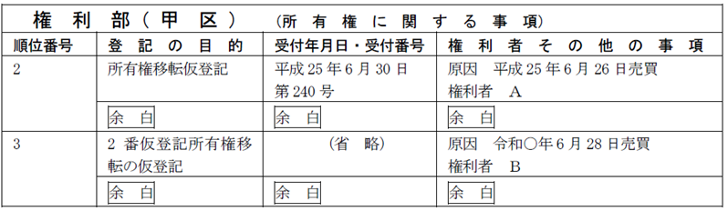
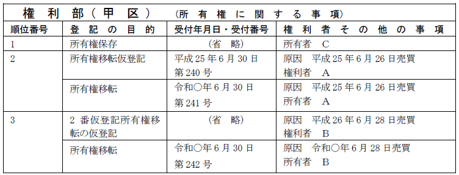
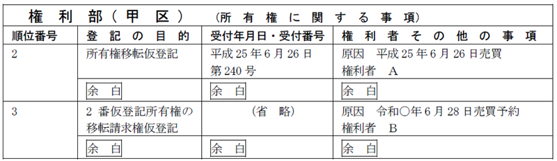
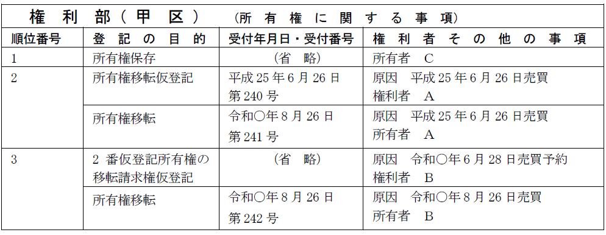
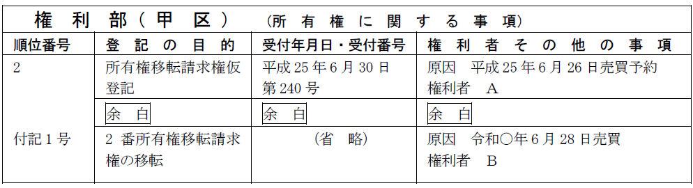
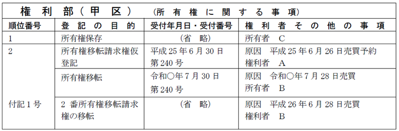
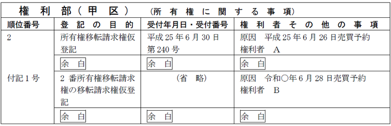
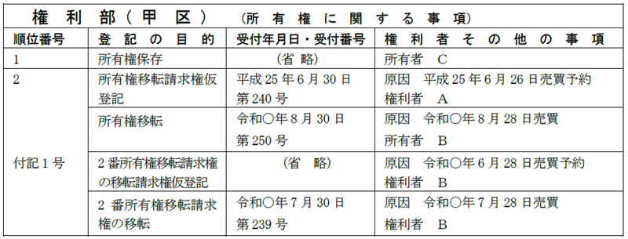

第１編 各 論
第６章 仮登記
第３節 仮登記の処分
1. 1号仮登記所有権の移転
(1) 意義
仮登記された権利を処分した場合、その処分された仮登記上の権利を保全するために登記を申請することができる。
1号仮登記された所有権が譲渡された場合、物権（所有権）が移転したので、主登記の仮登記によって移転仮登記がなされることになる（昭36.12.27民甲1600）。
ex.甲土地につきＡからＢへ売買を原因として所有権移転仮登記がされた後、ＢからＣへ甲土地が売買された場合には、主登記の仮登記によって所有権移転仮登記をすることができる。
【申請例122 1号仮登記 移転】
事例： 令和○年6月28日、ＡとＢは、Ａの甲土地上の甲区2番の所有権移転仮登記上の権利をＢに売却する契約を締結した。土地の課税標準の額は、金1000万円である。

(2) 申請情報の内容
(a) 登記の目的
「○番仮登記所有権移転の仮登記」と記載する。
(b) 登記原因及びその日付
登記原因は、「売買」等と記載し、日付は、売買等の効力が生じた日を記載する。
(c) 申請人
| 仮登記権利者と仮登記義務者の共同申請 | ○ |
| 仮登記義務者の承諾ｏｒ仮登記を命ずる処分がある場合の仮登記権利者の単独申請 | ○ |
(d) 添付情報
①印鑑証明書（不登令16条2項、18条2項）
書面申請かつ共同申請の場合には、仮登記義務者の印鑑証明書を提供する。
②承諾証明情報（不登令別表68添付情報ロ）
仮登記権利者が単独で申請する場合、仮登記義務者の承諾を証する当該仮登記義務者が作成した情報を提供する。なお、承諾証明情報が書面で作成されている場合には、原則として仮登記義務者の印鑑証明書を添付しなければならない（不登令19条1項、2項）。
以下の情報の提供は仮登記なので不要
| 登記識別情報 | × |
| 第三者の許可、同意若しくは承諾を証する情報 | × |
| 住所証明情報 | × |
(e) 登録免許税
不動産の価額×10/1000（登免法別表1.1.(12)ロ(3)）
※この後、仮登記に基づく本登記をする方法
ＣからＡへの所有権移転仮登記がされている場合において、さらに仮登記された所有権がＡからＢに移転しているときには、実体法上、所有権は、ＣからＡ、ＡからＢに移転しているので、まず、Ａを登記権利者、Ｃを登記義務者として本登記を申請し、次にＢを登記権利者、Ａを登記義務者として本登記を申請することになる。

2. 1号仮登記された所有権の移転請求権仮登記
(1) 1号仮登記された所有権の移転請求権
1号仮登記された所有権について移転請求権を取得した場合には、所有権についての移転請求権を取得したので、主登記の仮登記によって移転請求権仮登記がなされることになる。
ex.Ａから甲土地を取得したＢは、登記識別情報を提供できないことから所有権移転仮登記を経由した。その後、ＢＣ間で甲土地の売買予約がなされた。この場合、Ｃは、主登記の仮登記によって移転請求権仮登記を受けることになる。
【申請例123 1号仮登記 移転請求権保全仮登記】
事例： 令和○年6月28日、ＡとＢは、Ａの甲土地の甲区2番の所有権移転仮登記上の権利の売買予約の契約を締結した。土地の課税標準の額は、金1000万円である。

(2) 申請情報の内容
(a) 登記の目的
「○番仮登記所有権の移転請求権仮登記」と記載する。
(b) 登記原因及びその日付
登記原因は「売買予約」等と記載し、日付は、予約契約の締結日を記載する。
(c) 申請人
| 仮登記権利者と仮登記義務者の共同申請 | ○ |
| 仮登記義務者の承諾ｏｒ仮登記を命ずる処分がある場合の仮登記権利者の単独申請 | ○ |
(d) 添付情報
①印鑑証明書（不登令16条2項、18条2項）
書面申請、かつ、共同申請の場合には、仮登記義務者の印鑑証明書を提供する。
②承諾証明情報（不登令別表68添付情報ロ）
仮登記権利者が単独で申請する場合、仮登記義務者の承諾を証する当該仮登記義務者が作成した情報を提供する。なお、承諾証明情報が書面で作成されている場合には、原則として仮登記義務者の印鑑証明書を添付しなければならない（不登令19条1項、2項）。
以下の情報の提供は仮登記なので不要である。
| 登記識別情報 | × |
| 第三者の許可、同意若しくは承諾を証する情報 | × |
| 住所証明情報 | × |
(e) 登録免許税
不動産の価額×10/1000（登免法別表1.1.(12)ロ(3)）
※この後、仮登記に基づく本登記をする方法
Ａが、Ｃ名義の土地につき所有権移転仮登記をした後、Ｂが当該仮登記について移転請求権仮登記をした場合には、Ｂが、Ａに対する移転請求権を行使した時に、所有権がＡからＢに移転することになる。その前提として、Ｃを登記義務者、Ａを登記権利者とする仮登記に基づく本登記を申請する必要がある。

1. 2号仮登記された所有権移転請求権の移転の登記
(1) 総説
仮登記された権利を処分できるので、仮登記された所有権移転請求権も処分できる。この場合、その処分された仮登記上の権利を保全するために登記を申請することができる。
2号仮登記された所有権移転請求権の移転は、所有権以外の権利の移転であるので、付記登記による（不登規3条5号）。また、この場合は、請求権が確定的に移転するため、仮登記ではなく本登記となる（昭36.12.27民甲1600）。
ex.甲土地についてＡからＢへ売買予約を原因として所有権移転請求権仮登記がなされた後、ＢからＣへ売買を原因として当該所有権移転請求権の移転の登記を申請することができる。
【申請例124 2号仮登記 移転】
事例： 令和○年6月28日、ＡとＢは、Ａの甲土地上の甲区2番の所有権移転請求権をＢに売却する契約を締結した。

(2) 申請情報の内容
(a) 登記の目的
「○番所有権移転請求権の移転」と記載する。
(b) 登記原因及びその日付
登記原因は「売買」等と記載し、日付は売買等の効力が生じた日を記載する。
(c) 申請人
登記権利者と登記義務者の共同申請による（60条）。
この登記は、仮登記ではないので、仮登記義務者の承諾等があったとしても、登記権利者が単独で申請することはできない。
(d) 添付情報
①登記識別情報（22条本文）
登記義務者（仮登記名義人）の登記識別情報を提供する。
②印鑑証明書（不登令16条2項、18条2項）
書面申請であって、所有権仮登記名義人が義務者として申請する場合には、義務者の印鑑証明書を提供する。
※住所証明情報の提供は不要である。移転請求権を取得しただけであって、所有権を取得したわけではないからである（昭32.5.6民甲876）。
(e) 登録免許税
付記登記として申請件数1件につき金1000円である（登免法別表1.1.(14)）。
※この後、仮登記に基づく本登記をする方法
ＣからＡへの所有権移転請求権仮登記がされている場合において、当該移転請求権がＢに確定的に移転した場合には、Ｂが移転請求権を行使することにより、所有権はＣからＢに移転するので、Ｃを登記義務者、Ｂを登記権利者として仮登記に基づく本登記を申請する。

(3) 登記申請の可否
① 仮登記された不動産売買予約上の権利の譲渡を第三者に対抗するには、債権譲渡の対抗要件を具備することを要するか？
→ 当該仮登記に権利移転の付記登記をすれば足り、債権譲渡の対抗要件を具備することを要しない（最判昭35.11.24）。
② Ｂ、Ｃが仮登記の登記権利者となって、Ａの所有する不動産について売買予約を登記原因とする所有権移転請求権の保全の仮登記をした後、Ｂが当該所有権移転請求権を放棄した場合、放棄を登記原因として、ＢからＣへの当該所有権移転請求権の移転の登記を申請することができる（昭35.2.5民甲285）。
③ 仮登記のなされた停止条件付所有権を、真正なる登記名義の回復を登記原因としてする移転の登記の申請は、することができない（昭41.7.11民甲1850）。停止条件付所有権の移転の仮登記がされた土地につき、当該仮登記の登記名義人に錯誤があるときであっても同様であり、このような場合は、仮登記のなされた権利の更正の登記を申請すべきである（登研384P.79）。
④ Ａ所有の不動産につきされたＢへの売買予約に基づき不動産登記法105条2号の仮登記のされた所有権移転請求権が、ＢからＣへと請求権の移転の付記登記がされた後、Ｃが予約完結権を行使すると所有権は、Ａから直接Ｃへ移転するため、Ｃを登記権利者として仮登記に基づく本登記の申請をすることができる。
2. 2号仮登記された所有権移転請求権の移転請求権仮登記
(1) 意義
2号仮登記された所有権移転請求権について移転請求権を取得した場合には、所有権以外の権利についての移転請求権を取得したので、付記登記の仮登記によって移転請求権仮登記がなされることになる。
ex.ＡがＣから売買予約を原因として、所有権移転請求権仮登記を得た場合において、ＢがＡから当該所有権移転請求権について移転請求権を取得したときは、付記登記の仮登記によって移転請求権仮登記をすることができる（昭36.12.27民甲1600）。
ex.農地法第5条の許可を条件とする仮登記のされた停止条件付所有権を目的として、停止条件の成就を停止条件とする根抵当権設定の仮登記の申請をすることができる（昭39.2.27民甲204）。
【申請例125 2号仮登記 移転請求権保全仮登記】
事例： 令和○年6月28日、ＡとＢは、Ａの甲土地上の甲区2番の所有権移転請求権をＢに売却する予約契約を締結した。

(2) 申請情報の内容
(a) 登記の目的
「○番所有権移転請求権の移転請求権仮登記」と記載する。
(b) 登記原因及びその日付
登記原因は、「売買予約」等と記載し、日付は、予約契約の締結日を記載する。
(c) 申請人
| 仮登記権利者と仮登記義務者の共同申請 | ○ |
| 仮登記義務者の承諾ｏｒ仮登記を命ずる処分がある場合の仮登記権利者の単独申請 | ○ |
(d) 添付情報
①印鑑証明書（不登令16条2項、18条2項）
書面申請、かつ、共同申請であって、所有権移転請求権の移転請求権仮登記を申請する場合には、仮登記義務者の印鑑証明書を提供する。
②承諾証明情報（不登令別表68添付情報ロ）
仮登記権利者が単独で申請する場合、仮登記義務者の承諾を証する当該仮登記義務者が作成した情報を提供する。なお、承諾証明情報が書面で作成されている場合には、原則として仮登記義務者の印鑑証明書を添付しなければならない（不登令19条1項、2項）。
以下の情報の提供は仮登記なので不要である。
| 登記識別情報 | × |
| 第三者の許可、同意若しくは承諾を証する情報 | × |
| 住所証明情報 | × |
(e) 登録免許税
付記登記として申請件数1件につき金1000円である（登免法別表1.1.(14)）。
※この後、仮登記に基づく本登記をする方法
ＣからＡへの所有権移転請求権仮登記がされている場合において、Ｂが当該移転請求権について移転請求権を取得したときは、まず、ＢがＡに対して移転請求権を行使し、ＡのＣに対する所有権移転請求権を確定的にＢに移転させる。そして、Ｂがその請求権を行使することにより、所有権がＢに帰属することになる。

仮登記の処分の登記の態様のまとめ
| ・ | 1号仮登記 | 2号仮登記 | ||
| 移転 | 主登記 | 仮登記 | 付記登記 | 本登記 |
| 移転請求権 | 主登記 | 仮登記 | 付記登記 | 仮登記 |
3. その他
① 仮登記を命ずる処分の決定を証する情報を提供して所有権保存の仮登記をす ることができる（大判大14.6.17）。表示に関する登記はされているが所有権の登記のない不動産を承継取得したが、その承継取得者の所有権を確認する判決が得られていないとき等において、仮登記を命ずる処分の決定を証する情報を提供して所有権保存の仮登記をする実益がある。
② 破産宣告前に得た破産者の承諾を証する情報を提供し、破産宣告前の日を原因日付とする根抵当権設定の仮登記の申請は、受理することができない（平5.2.4民3.1182）。破産の場合は破産管財人が民法177の第三者に含まれるとされており（大判昭8.11.30）、仮登記権利者は、破産宣告により破産者の管理処分権の一切を有する破産管財人に登記なくして対抗することができないと解されており、破産管財人の関与なしでは第三者の権利の取得による登記を認めていない。
③ 仮登記された地上権に対し抵当権を設定した場合、抵当権設定の仮登記を申請する。抵当権の仮登記を本登記とする前提として、地上権の仮登記を本登記とし、その後に抵当権の仮登記の本登記をすることになる（昭39.2.27民甲204）。